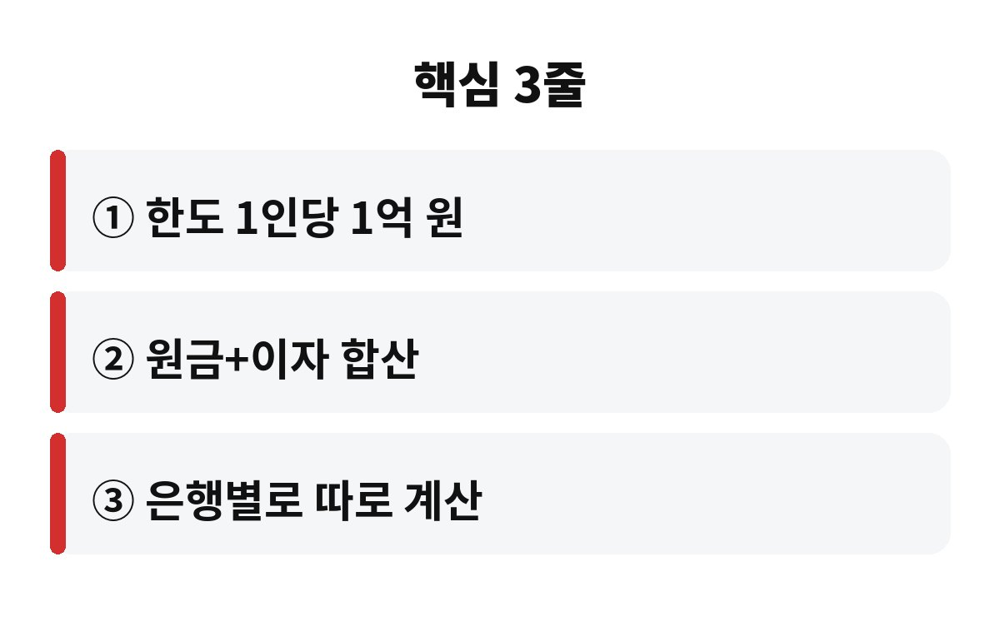
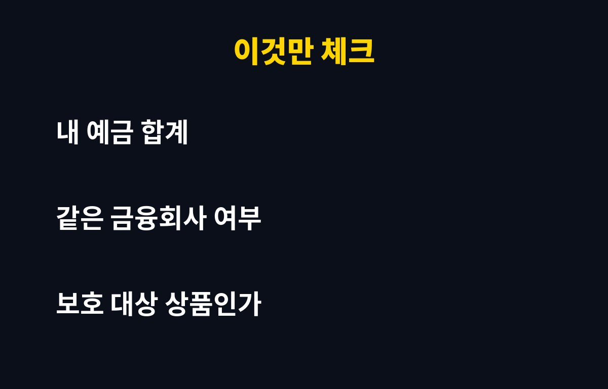

예금자보호 한도는 한 금융회사당 1인 기준 원금과 이자를 합쳐 1억 원까지입니다. 목돈을 한 은행에 몰아둔 40·50대라면, 1억이 넘는 부분은 어떻게 되는지 궁금하지 않으신가요?
예전에는 이 한도가 5천만 원이었는데, 2025년 9월부터 1억 원으로 두 배 올랐어요. 그래서 "이제 웬만하면 다 안전하겠지" 하고 안심하는 분이 많습니다. 그런데 안심하기 전에 확인할 게 몇 가지 있어요.
아닙니다. 이게 제일 많이 헷갈리는 부분이에요. 한도 1억 원은 원금과 이자를 합친 금액입니다. 예를 들어 원금 1억 원을 정기예금으로 넣어두고 이자가 붙으면, 합계가 1억을 넘기 때문에 넘는 이자 부분은 보호받지 못할 수 있죠.
그러니 딱 1억에 맞춰 넣기보다, 이자까지 감안해서 조금 여유를 두고 나눠 넣는 게 안전합니다.
네, 금융회사별로 따로 계산합니다. A은행 1억, B은행 1억처럼 나눠 두면 각각 보호받아요. 반대로 같은 은행에 예금, 적금, 보통예금을 아무리 여러 개 만들어도 그 은행 안에서는 전부 합산해 1억까지만 보호됩니다.
은행 지점이 달라도 같은 은행이면 한 곳으로 봐요. 또 같은 금융그룹 계열이라도 법인이 다르면 따로 계산하는 게 원칙이라, 헷갈리면 해당 금융회사에 직접 물어보는 게 확실합니다.
예금, 적금, 원리금보장형 상품은 대체로 보호 대상입니다. 하지만 펀드, 주식, 채권처럼 원금이 손실될 수 있는 투자 상품은 보호 대상이 아니에요. 은행 창구에서 가입했다고 해서 다 예금자보호가 되는 건 아니라는 뜻이죠.
| 구분 | 보호 여부 |
| 정기예금·적금 | 보호 (한도 내) |
| 보통예금 | 보호 (한도 내) |
| 펀드·주식·채권 | 보호 안 됨 |

방법은 간단해요. 먼저 은행별 예금 합계를 한 번 적어보세요. 한 곳이 1억에 가까워졌다면 일부를 다른 금융회사로 옮겨 나누면 됩니다. 금리가 비슷하다면 굳이 한곳에 몰 이유가 없거든요.
퇴직금이나 집을 판 돈처럼 갑자기 큰돈이 들어온 분은 특히 더 점검해 보셔야 합니다. 가입한 금융회사가 예금보험공사 보호 대상인지도 확인하세요. 보호 여부는 금융회사 창구나 예금보험공사에서 확인할 수 있습니다.
혹시 한 은행에 1억 넘게 맡겨두고 계신가요? 오늘 앱 열어서 합계부터 확인해 보세요. 도움이 됐다면 구독해 두시면 이런 생활 속 돈 이야기를 계속 받아보실 수 있어요.

※ 본 글은 정보 제공 목적이며 투자 권유가 아닙니다. 보호 한도와 대상은 변경될 수 있으니 금융회사·예금보험공사에서 확인하세요.